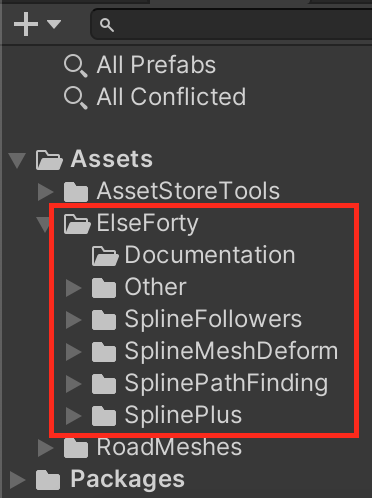

Introduction
Spline Plus is a compact branching splines system and advanced path following tool for Unity3D.
Feartures
- Spline Branching.
- Compact Spline modeling tools.
- Node Speed.
- Node Normal.
- Node Scale (Taper).
- Node type : Smooth, Broken, Free.
- Simple/Complex (Train) followers
- Followers smooth Acceleration/Deceleration.
- Followers smart Keyboard navigation at intersections,
- Projected path following for simple followers.
- Advanced Events system.
- Spline projection into mesh.
- API to Create splines at runtime.
- Custom Editor and Use of Unity Reorderable lists.
- Import/Export spline data (.SP files).
- Copy/Past spline data between Spline Plus game objects.
- Full source code included.
- Detailed Documentation.
Setup
All Packages from ElseForty are placed in the 'ElseForty' folder once imported.

To Add a Spline Plus game object to your scene hierarchy.

Notions
Node
They form a branch, they are marked in the scene view with a sphere as shown bellow in the image ,
The Number on top is the node index in the selected branch nodes list .
Info
Click on the node in your scene view to select a node.
Branch
A branch is formed by nodes. the selected branch is marked with green color in your scene view as shown in the image bellow,
Info
Click on the branch in your scene view to select it.
Shared node
A shared node is a node that is shared by more than one branch, it is represented by a purple sphere in your scene view, like in the image bellow.
Info
The node index on top changes based on the branch you're selecting